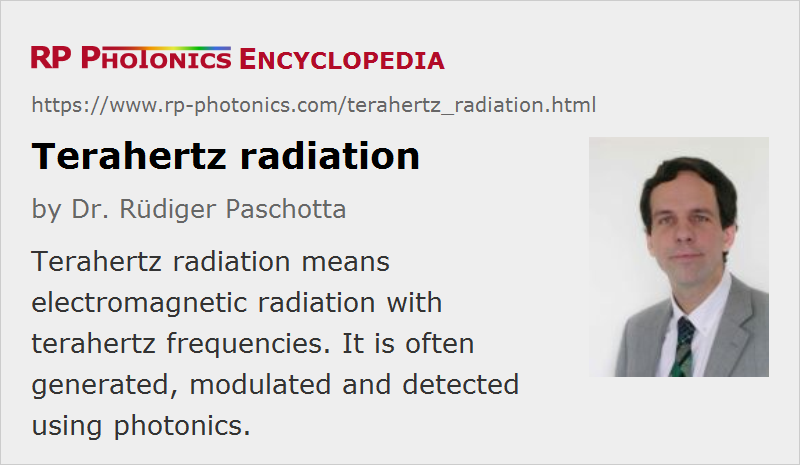

Terahertz Radiation
Definition: electromagnetic radiation with frequencies around 0.1 THz to 10 THz
Alternative terms: terahertz waves, t-waves, far infrared
German: Terahertz-Strahlung
Categories: nonlinear optics, physical foundations
How to cite the article; suggest additional literature
Author: Dr. Rüdiger Paschotta
Terahertz radiation is typically understood to be electromagnetic radiation in the frequency range from roughly 0.1 THz to 10 THz, corresponding to wavelengths from 3 mm down to 30 μm. Such frequencies are higher than those of radio waves and microwaves, but lower than those of infrared light. As the wavelengths are in the range of 0.03 mm to 3 mm, and often below 1 mm, terahertz radiation is also sometimes called submillimeter radiation. Also, at least the higher-frequency part of the terahertz region may also be called the far infrared.
For a long time, terahertz radiation was little used in science and technology, essentially since there were neither good terahertz sources nor suitable detectors available. Therefore, this spectral range was often called the terahertz gap. This gradually changed until in the 1990s the interest in terahertz waves grew strongly, and more and more research groups engaged in this area. The rapid advances in that field are largely due to advances in photonics, which created various powerful solutions both for generation and detection of terahertz waves, and also for modulating terahertz signals. These advances have strengthened the motivation for further efforts in various areas of terahertz technology, and the fast increasing technological options also open a wide field of applications.
Terahertz Sources
There are various kinds of sources (emitters) of terahertz radiation; see the article on terahertz sources. Some are based on electronics and microwave technology, others make substantial use of photonics.
Terahertz Detectors
There are various kinds of detectors for terahertz radiation; see the article on terahertz detectors.
Applications of Terahertz Radiation
Terahertz radiation finds a large and still expanding range of applications. In most cases, these utilize some of the special properties of terahertz radiation.
Imaging
Terahertz radiation can well penetrate many materials such as paper, plastics, textiles and foams. This has lead to imaging applications in areas like non-destructive industrial quality checks. For example, terahertz imaging has been extensively applied to Space Shuttles after the shuttle Columbia experienced a terrible accident in 2003, which was attributed to hidden damage of foam materials. Another application is in the security inspection of airplane passengers, namely the detection of weapons hidden below clothes.
The attenuation of terahertz waves in media is often stronger than for microwaves and thus limits the possible depth of imaging. On the other hand, the shorter wavelengths make a higher spatial resolution possible.
Communications
Terahertz radiation is difficult to transmit through cables, but can be transmitted through air. Diffraction is weaker than in the microwave region, so that collimated beams without excessive beam diameters can be formed. At various frequencies, however, molecules of air (including water vapor) strongly absorb terahertz waves. Fast data transmission is still possible at least over short distances like a couple of meters. Note that the available bandwidth and thus the potential data capacity is much larger than for microwave systems such as traditional WLAN. On the other hand, the cost of terahertz sources and detectors is still far higher than for microwave equipment.
Although direct terahertz transmission through cables or fibers is extremely limited by the high losses, one can transmit optical signals through optical fibers which carry terahertz signals in the form of optical frequency differences. Some kind of photomixer can thereafter be used to generate the terahertz radiation, e.g. for radiation via an antenna.
Terahertz Spectroscopy
Terahertz frequencies are useful for spectroscopy in various areas such as the investigation of superconductors, plasmonic effects in conducting materials and rotational states of molecules. This is because many fundamental resonances of materials are in the terahertz frequency region.
Time-domain spectroscopy is a frequently used technique in that area. This means that one records the temporal shape of a transmitted pulsed terahertz waveform, for example, by optical sampling with a variable time delay. A spectrum is then obtained numerically with a Fourier transform. Frequently used terahertz sources for such measurements are pulsed sources based on photoconductive antennas or on nonlinear frequency conversion in nonlinear crystals.
Safety Aspects
In contrast to X-rays, terahertz waves have a too low photon energy for the ionization of materials. Non-ionizing radiation is much less likely to cause cancer and genetic mutations.
In principle, health effects may result through other effects than ionization and genetic damage – for example, subtle influence on the behavior of cells. The situation is very similar to that with radio waves and millimeter waves, where there are also some concerns about effects of “electrosmog”. So far, extensive scientific investigations have not produced any substantial reasons for expecting health effects, unless at extremely high intensity levels. There is neither solid evidence for detrimental health effects nor a plausible mechanism causing such effects in a non-thermal intensity regime. It is hardly possible, however, to firmly exclude any possible health effects of gigahertz or terahertz radiation.
Lacking solid data, it will for the foreseeable future be impossible to define scientifically founded exposure limits for terahertz radiation. After all, these would have to be based on known damage mechanisms. In this situation, common approaches are either to define exposure limits only based on known effects (e.g. thermal effects at high average power levels) or to define substantially lower limits according to what can easily be achieved in currently relevant applications.
Questions and Comments from Users
Here you can submit questions and comments. As far as they get accepted by the author, they will appear above this paragraph together with the author’s answer. The author will decide on acceptance based on certain criteria. Essentially, the issue must be of sufficiently broad interest.
Please do not enter personal data here; we would otherwise delete it soon. (See also our privacy declaration.) If you wish to receive personal feedback or consultancy from the author, please contact him e.g. via e-mail.
By submitting the information, you give your consent to the potential publication of your inputs on our website according to our rules. (If you later retract your consent, we will delete those inputs.) As your inputs are first reviewed by the author, they may be published with some delay.
Bibliography
| [1] | D. H. Auston et al., “Cherenkov radiation from femtosecond optical pulses in electro-optic Media”, Phys. Rev. Lett. 53 (16), 1555 (1984), doi:10.1103/PhysRevLett.53.1555 |
| [2] | Ch. Fattinger and D. Grischkowsky, “Terahertz beams”, Appl. Phys. Lett. 54 (6), 490 (1989), doi:10.1063/1.100958 |
| [3] | D. Grischkowsky et al., “Far-infrared time-domain spectroscopy with terahertz beams of dielectrics and semiconductors”, J. Opt. Soc. Am. B 7 (10), 2006 (1990), doi:10.1364/JOSAB.7.002006 |
| [4] | Y. J. Ding and J. B. Khurgin, “A new scheme for efficient generation of coherent and incoherent submillimeter to THz waves in periodically-poled lithium niobate”, Opt. Commun. 148, 105 (1998), doi:10.1016/S0030-4018(97)00611-1 |
| [5] | G. Gallot and D. Grischkowsky, “Electro-optic sampling of terahertz radiation”, J. Opt. Soc. Am. B 16 (8), 1204 (1999), doi:10.1364/JOSAB.16.001204 |
| [6] | R. Köhler et al., “Terahertz semiconductor-heterostructure laser”, Nature 417, 156 (2002), doi:10.1038/417156a |
| [7] | H. Han et al., “Terahertz pulse propagation in a plastic photonic crystal fiber”, Appl. Phys. Lett. 80 (15), 2634 (2002), doi:10.1063/1.1468897 |
| [8] | J. Hebling et al., “Velocity matching by pulse front tilting for large area THz pulse generation”, Opt. Express 10 (21), 1161 (2002), doi:10.1364/OE.10.001161 |
| [9] | Y. J. Ding, “Generation of quasi-single-cycle THz pulses based on broadband phase-matched difference-frequency generation in second-order nonlinear medium: high output powers and conversion efficiencies”, J. Sel. Top. Quantum Electron. 10, 1171 (2004), doi:10.1109/CLEO.2005.202156 |
| [10] | A. Schneider et al., “Generation of terahertz pulses through optical rectification in organic DAST crystals: theory and experiment”, J. Opt. Soc. Am. B 23 (9), 1822 (2006), doi:10.1364/JOSAB.23.001822 |
| [11] | S. Hoffmann and M. R. Hofmann, “Generation of Terahertz radiation with two color semiconductor lasers”, Laser & Photon. Rev. 1 (1), 44 (2007), doi:10.1002/lpor.200710004 |
| [12] | M. Tonouchi, “Cutting-edge terahertz technology”, Nature Photon. 1 (2), 97 (2007), doi:10.1038/nphoton.2007.3 |
| [13] | B. S. Williams, “Terahertz quantum-cascade lasers”, Nature Photon. 1, 517 (2007), doi:10.1038/nphoton.2007.166 |
| [14] | J. E. Schaar et al., “Intracavity terahertz-wave generation in a synchronously pumped optical parametric oscillator using quasi-phase-matched GaAs”, Opt. Lett. 32 (10), 1284 (2007), doi:10.1364/OL.32.001284 |
| [15] | K. L. Vodopyanov, “Optical THz-wave generation with periodically-inverted GaAs”, Laser & Photonics Reviews 2 (1-2), 11 (2008), doi:10.1002/lpor.200710028 |
| [16] | A. G. Stepanov et al., “Generation of 30 μJ single-cycle terahertz pulses at 100 Hz repetition rate by optical rectification”, Opt. Lett. 33 (21), 2497 (2008), doi:10.1364/OL.33.002497 |
| [17] | G. Scalari et al., “THz and sub-THz quantum cascade lasers”, Laser & Photon. Rev. 3 (1-2), 45 (2009), doi:10.1002/lpor.200810030 |
| [18] | J. Dai and X.-C. Zhang, “Terahertz wave generation from gas plasma using a phase compensator with attosecond phase-control accuracy”, Appl. Phys. Lett. 94, 021117 (2009), doi:10.1063/1.3068501 |
| [19] | S. Kumar, “Recent progress in terahertz quantum cascade lasers”, J. Sel. Top. Quantum Electron. 17 (1), 38 (2011), doi:10.1109/JSTQE.2010.2049735 |
| [20] | J. Dai et a l., “Terahertz wave air photonics: terahertz wave generation and detection with laser-induced gas plasma”, IEEE J. Sel. Top. Quantum. Electron. 17 (1), 183 (2011), doi:10.1109/JSTQE.2010.2047007 |
| [21] | P. Uhd Jepsen et al., “Terahertz spectroscopy and imaging – modern techniques and applications”, Laser & Photonics Reviews 5 (1), 124 (2011), doi:10.1002/lpor.201000011 |
| [22] | M. C. Hoffmann and J. A. Fülöp, “Intense ultrashort terahertz pulses: generation and applications”, J. Phys. D: Appl. Phys. 44 (8), 083001 (2011), doi:10.1088/0022-3727/44/8/083001 |
| [23] | T. Kampfrath et al., “Resonant and nonresonant control over matter and light by intense terahertz transients”, Nature Photon. 7, 680 (2013), doi:10.1038/nphoton.2013.184 |
| [24] | U. Welp et al., “Superconducting emitters of THz radiation”, Nature Photon. 7, 702 (2013), doi:10.1038/nphoton.2013.216 |
| [25] | M. Clerici et al., “Wavelength scaling of terahertz generation by gas ionization”, Phys. Rev. Lett. 110 (25), 253901 (2013), doi:10.1103/PhysRevLett.110.253901 |
| [26] | S. Atakaramians et al., “Terahertz dielectric waveguides”, Advances in Optics and Photonics 5 (2), 169 (2013), doi:10.1364/AOP.5.000169 |
| [27] | V. Vicario et al., “Generation of 0.9-mJ THz pulses in DSTMS pumped by a Cr:Mg2SiO4 laser”, Opt. Lett. 39 (23), 6632 (2014), doi:10.1364/OL.39.006632 |
| [28] | A. Sell et al., “Phase-locked generation and field-resolved detection of widely tunable terahertz pulses with amplitudes exceeding 100 MV/cm”, Opt. Lett. 33 (23), 2767 (2008), doi:10.1364/OL.33.002767 |
| [29] | D. M. Mittleman, “Twenty years of terahertz imaging” (invited), Opt. Express 26 (8), 9417 (2018), doi:10.1364/OE.26.009417 |
| [30] | S. Islam et al., “Terahertz optical fibers”, Opt. Express 28 (11), 16089 (2020), doi:10.1364/OE.389999 |
| [31] | I. Wilke and S. Sengupta, “Nonlinear Optical Techniques for Terahertz Pulse Generation and Detection – Optical Rectification and Electrooptic Sampling”, chapter 2 in Terahertz Spectroscopy: Principles and Applications, edited by S. L. Dexheimer, Optical Science and Engineering Vol. 131, 41, CRC Press (2007) |
| [32] | D. Mittleman (ed.), Sensing with terahertz radiation, Springer Optical Science 85. Berlin: Springer (2003) |
See also: infrared light, optical sampling, electro-optic sampling, optical rectification, sum and difference frequency generation, nonlinear crystal materials, quantum cascade lasers, pump–probe measurements, ultrashort pulses
and other articles in the categories nonlinear optics, physical foundations
|  |
If you like this page, please share the link with your friends and colleagues, e.g. via social media:
These sharing buttons are implemented in a privacy-friendly way!